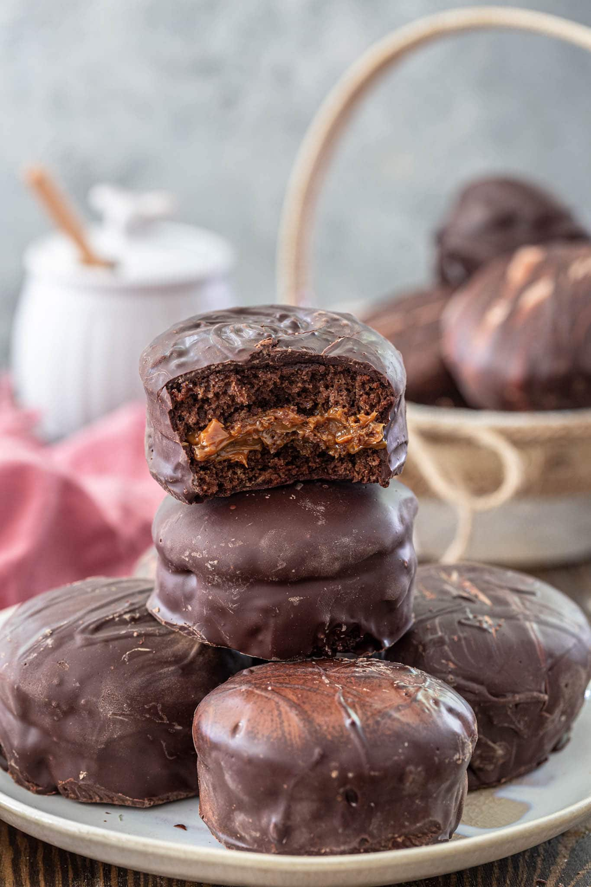

Pao de Mel

Description
Pao de mel are brazilian honey cakes made with chocolate spiced cake and filled with dulce de leche. Read the recipe below for the perfect way to satisfy your sweet tooth.
Ingredients
- 1 egg
- 1 cup milk
- 5 1/4 tablespoons sugar
- 1 1/4 cup honey
- 2 tablespoons melted and cooled butter
- 2.5 teaspoons of baking soda
- 1 cup all purpose flour
- 1 teaspoon baking powder
- 1 teaspoon cinammon
- 1/4 teaspoon salt
- 1/2 teaspoon of nutmeg
- 1/4 teaspoon ground cloves
- 3 tablespoons cocoa powder
- dulce de leche
- 2 cups tempered semisweet chocolate
Recipe
- Mix the egg with milk, sugar, honey and butter in a large bowl. Whisk well. In another bowl, stir in the remaining dry ingredients and sift them slowly over the egg mixture in three portions, stirring well after each addition until a smooth, homogeneous mixture is formed. Place batter in fridge for 15 minutes.
- In the meantime, turn the oven on at 360 F. If using non-stick mini cake pans, you don’t need to do anything. Otherwise grease and flour the pans lightly. Ideally you need a 6 cm round tin (a bit less than 2.5 inches). Pour the batter halfway through the tin, do not fill more than half. Bake for 15 to 20 minutes. Unmold the still warm rolls and let them cool completely on a rack. Cut them in half and stuff each with the dulce de leche.
- Temper chocolate and cover each little pao de mel.